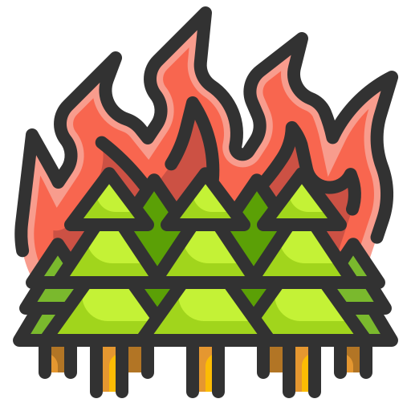

Cuidados
Existem diversos formas de cuidamos da Terra, como: Economia de energia, Economia de água, Separação de lixo, Reciclagem, Preservação da vegetação, Redução do consumo, Mobilidade sustentável, Alimentação, Denúncia de crimes ambientais, Educação ambiental.
Reciclagem
Para fazer a reciclagem, devemos seguir essa dicas: Conhecer os materiais recicláveis, Separar os resíduos, Limpar os itens, Informar-se sobre a coleta seletiva, Utilizar lixeiras específicas, Dobrar as caixas de papelão, Embalar os vidros, Informar-se sobre a coleta na região.

Queimadas
Para evitar as quimadas florestais, temos que tomar medidas como: Evitar o uso de fogo para limpar terrenos e queimar lixo, Não jogar lixo e entulhos às margens de rodovias, Evitar jogar bitucas de cigarro pela janela do veículo, Descartar cigarros, fósforos e outros materiais inflamáveis em local apropriado.
